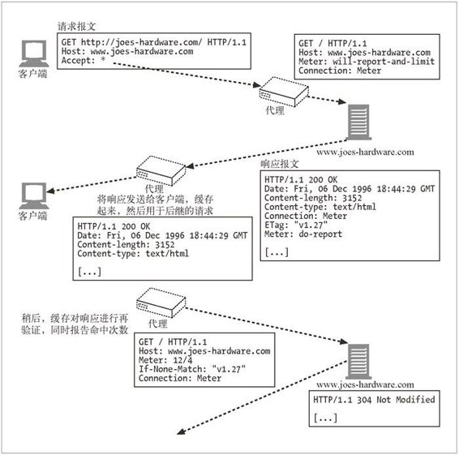

21.3 命中率测量
原始服务器通常会出于计费的目的保留详细的日志记录。内容提供者需要知道 URL 的受访频率，广告商需要知道广告的出现频率，网站作者需要知道所编写的内容的受欢迎程度。客户端直接访问 Web 服务器时，日志记录可以很好地跟踪这些信息。
但是，缓存服务器位于客户端和服务器之间，用于防止服务器同时处理大量访问请求 1（这正是缓存的目的）。缓存要处理很多 HTTP 请求，并在不访问原始服务器的情况下满足它们的请求，服务器中没有客户端访问其内容的记录，导致日志文件中出现遗漏。
1：回想一下，几乎每个浏览器都会有一个缓存。
由于日志数据会遗失，所以，内容提供者会对其最重要的页面进行缓存清除（cache bust）。缓存清除是指内容提供者有意将某些内容设置为无法缓存，这样，所有对此内容的请求都会被导向原始服务器。2 于是，原始服务器就可以记录下访问情况了。不使用缓存可能会生成更好的日志，但会减缓原始服务器和网络的请求速度，并增加其负荷。
2：第 7 章说明了怎样将 HTTP 响应标记为不可缓存的。
由于代理缓存（及一些客户端）都会保留自己的日志，所以如果服务器能够访问这些日志（或者至少有一种粗略的方式可以判断代理缓存会以怎样的频率提供其内容），就可以避免使用缓存清除。命中率测量协议是对 HTTP 的一种扩展，它为这个问题提供了一种解决方案。命中率测量协议要求缓存周期性地向原始服务器汇报缓存访问的统计数据。
RFC 2227 详细定义了命中率测量协议。本节将详细介绍此协议。
21.3.1 概述
命中率测量协议定义了一种 HTTP 扩展，它提供了一些基本的功能，缓存和服务器可以实现这些功能来共享访问信息，规范已缓存资源的可使用次数。
缓存给日志访问带来了问题，命中率测量并不是这个问题的完整解决方案，但它确实提供了一种基本方式，以获取服务器希望跟踪的度量值。命中率测量协议并没有（而且可能永远都不会）得到广泛的实现或应用。也就是说，在维护缓存性能增益的同时，像命中率测量这样的合作方案会给出一些提供精确访问统计信息的承诺。希望这会推动命中率测量协议的实现，而不是把内容标记为不可缓存的。
21.3.2 Meter首部
命中率测量扩展建议使用新增加的首部 Meter，缓存和服务器可以通过它在相互间传输与用法和报告有关的指令，这与用来进行缓存指令交换的 Cache-Control 首部很类似。
表 21-10 列出了定义的各种指令和谁可以在 Meter 首部传输这些指令。
表21-10 命中率测量指令
| 指 令 | 缩 写 | 执 行 者 | 描 述 |
|---|---|---|---|
| will-report-and-limit | w | 缓存 | 缓存可以报告使用情况并遵循服务器指定的所有使用限制 |
| wont-report | x | 缓存 | 缓存可以遵循使用限制，但不报告使用情况 |
| wont-limit | y | 缓存 | 缓存可以报告使用情况但不会限制使用 |
| count | c | 缓存 | 报告指令，以 uses/reuses 整数的形式说明。比如：count=2/4 a |
| max-uses | u | 服务器 | 允许服务器指定某响应可被缓存使用的最大次数。比如：max-uses=100 |
| max-reuses | r | 服务器 | 允许服务器指定某响应可被缓存重用的最大次数。比如：max-reuses=100 |
| do-report | d | 服务器 | 服务器要求代理发送使用报告 |
| dont-report | e | 服务器 | 服务器不要求使用汇报 |
| timeout | t | 服务器 | 允许服务器指定对某资源进行计量的超时时间。缓存应该在指定的超时时间，或在此时间之前发送报告，允许有 1 分钟的误差。超时是以分钟为单位的。比如：timeout=60 |
| wont-ask | n | 服务器 | 服务器不需要任何计量信息 |
a：命中率测量定义了一个 use，用一个响应来满足请求，还定义了一个 reuse，对客户端请求进行再验证。
图 21-1 给出了一个执行中的命中率测量实例。事务的第一部分就是客户端和代理缓存之间一个普通的 HTTP 事务，但在代理请求中，要注意有插入的 Meter 首部和来自服务器的响应。这里，代理正在通知服务器它可以进行命中率测量，作为回应，服务器则请求代理报告它的命中次数。
从客户端的角度来看，请求正常结束了，代理开始代表服务器跟踪该请求资源的命中次数。稍后，代理会尝试与服务器再次验证资源。代理会在发送给服务器的条件请求中嵌入它跟踪记录的计量信息。

图 21-1 命中率测量示例